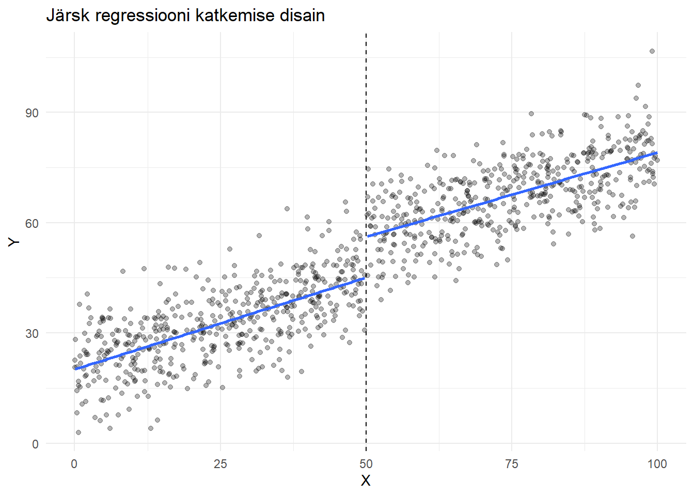
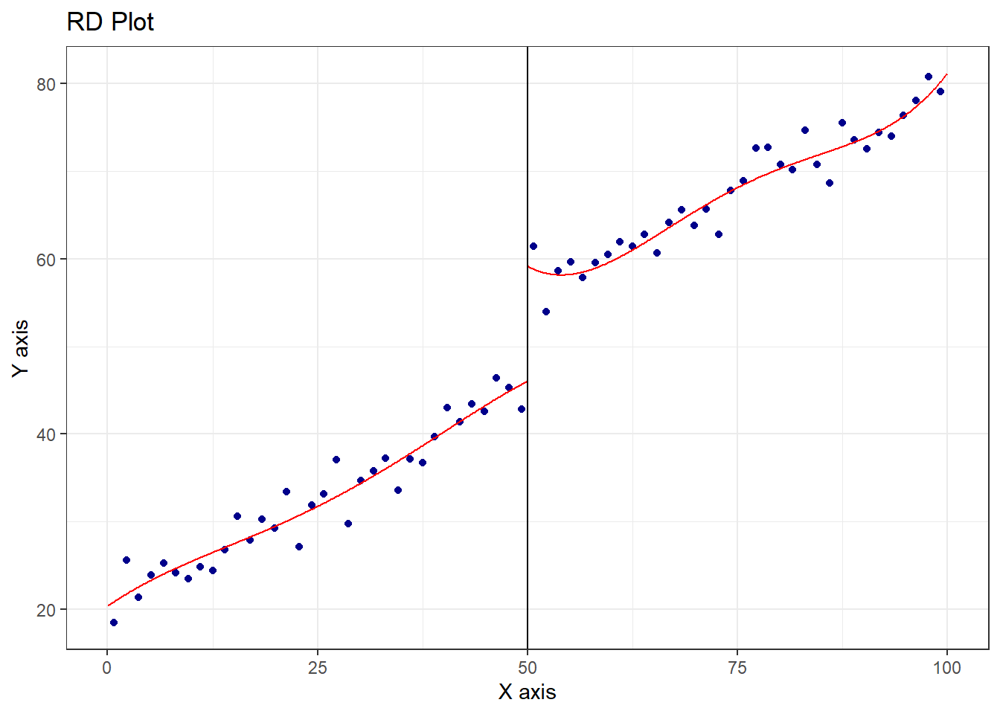
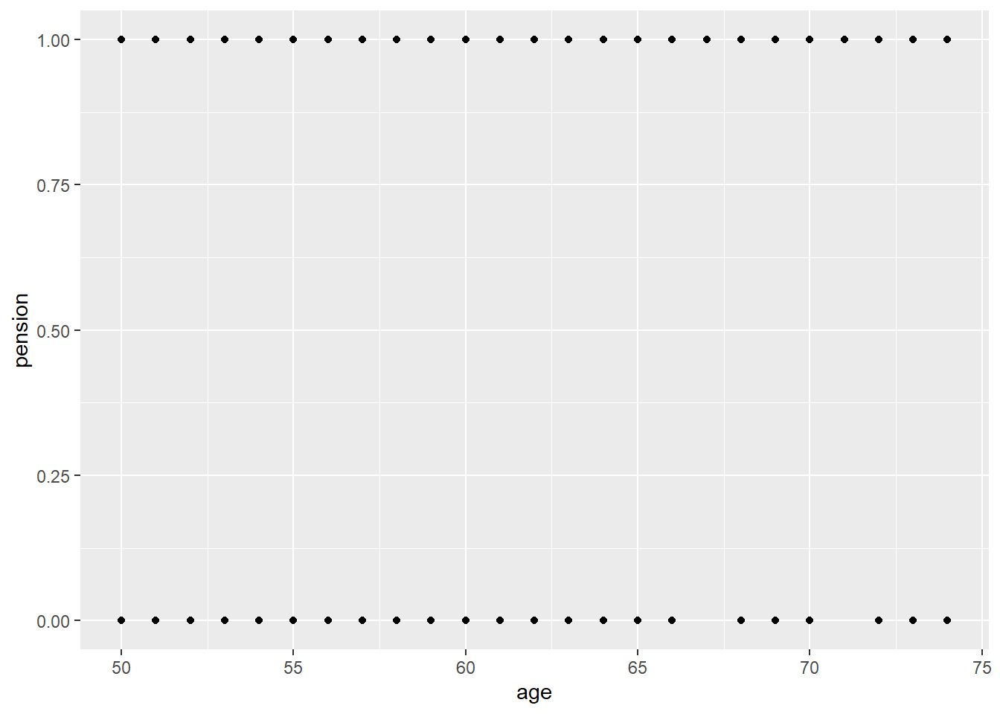
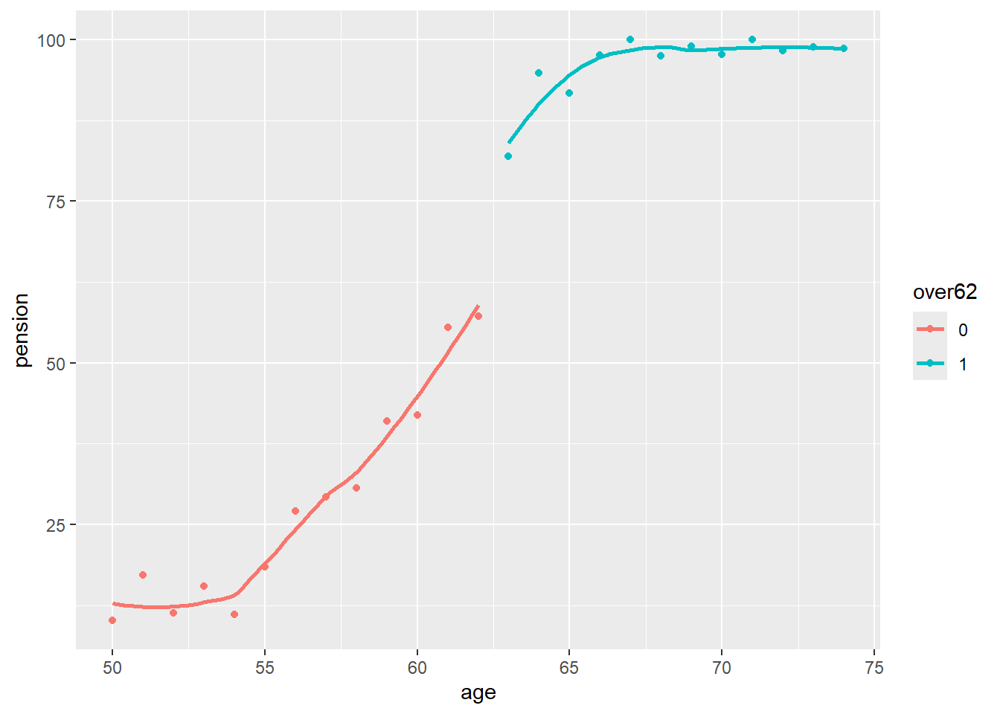
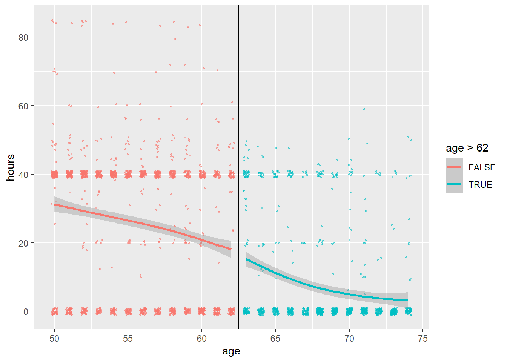
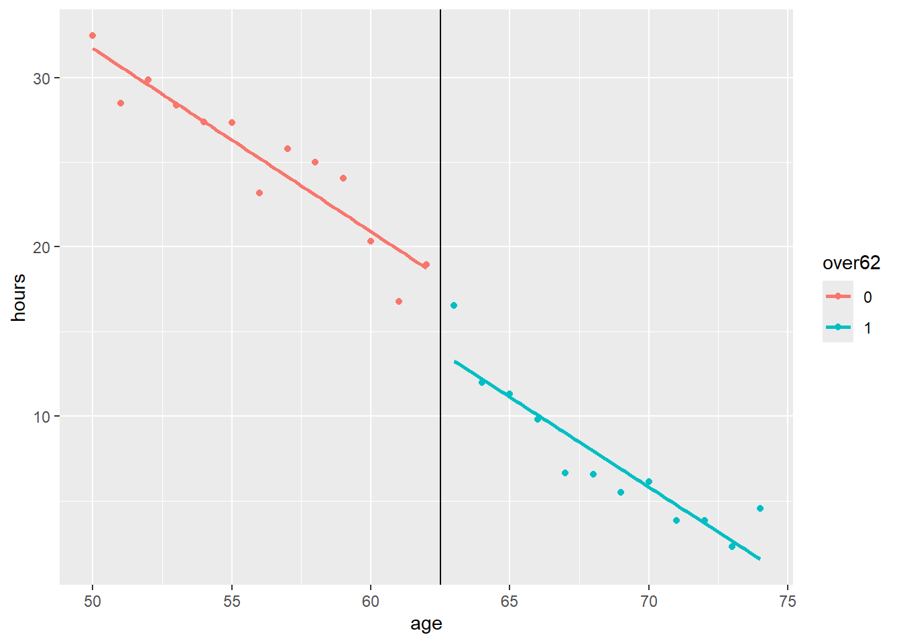
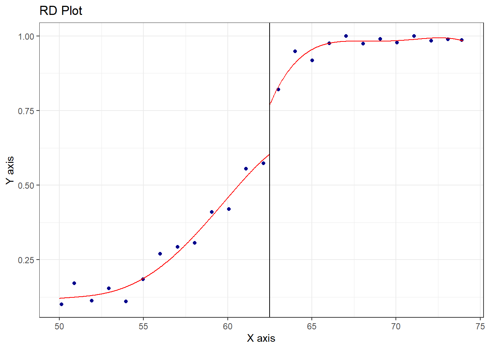
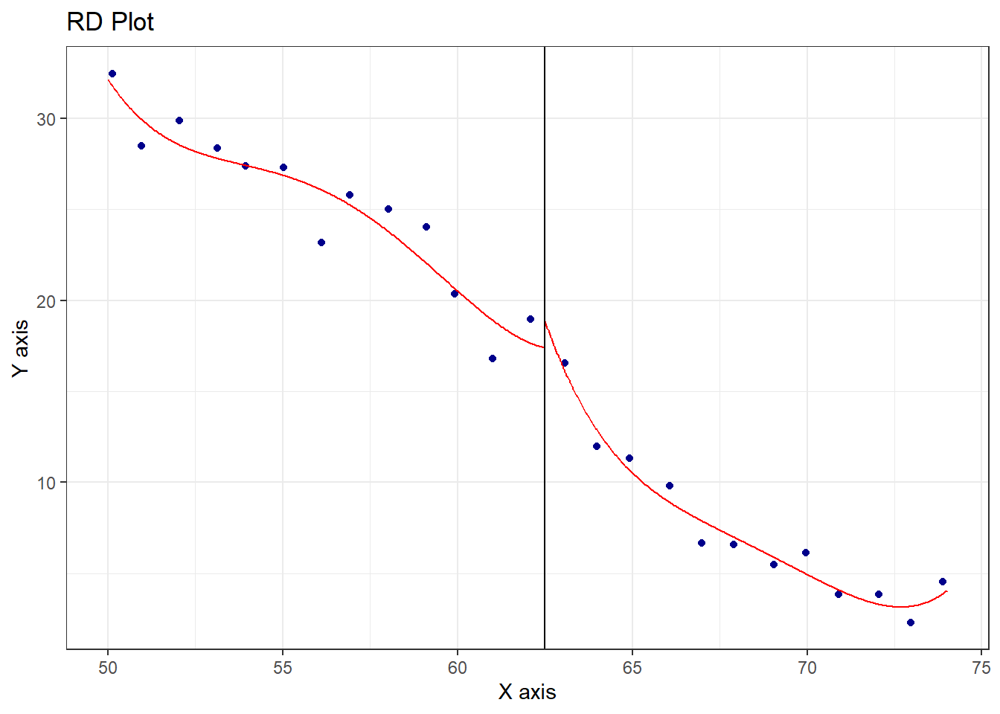
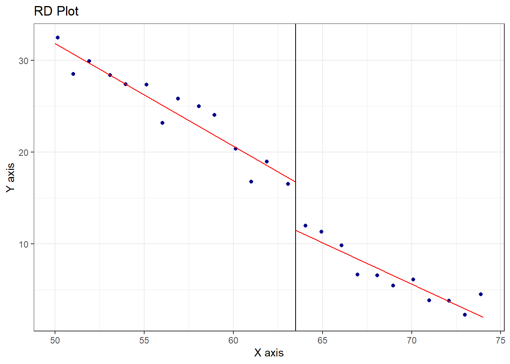

Regressiooni katkemise disain (Regression Discontinuity Design, RDD), tõlgitud ka kui “tükati pidev regressioon”, on kvaasieksperimentaalne meetod põhjusliku mõju hindamiseks, kui osalemine meetmes sõltub mõnest pidevast tunnusest (nt vanus, sissetulek, hinne) ja selgelt määratletud lõikepunktist.
Tüüpilised näited:
täispensionile õigus alates vanusest 65
tasuta hambaravi kuni 19. eluaastani
toetus ettevõtetele COVID-19 ajal, kui käive langeb rohkem kui 30%
stipendium, kui hinne ületab 4,5
Antud disaini puhul me ei saa leida täpselt samasugust osalus- ja võrdlusrühma, sest meetmesse on sisse kirjutatud, et puudub ühine tugi (common support), kuid saame võrrelda väga lähedal lõikepunktile olevaid isikuid.
Näiteks võrdleme täispensioni saamise mõju hindamiseks töötundidele inimesi vanuses 64 ja 66 aastat; võrdleme tasuta hambaravi mõju hindamiseks hambaarsti külastustele noori vanuses 18 ja 20; võrdleme stipendiumi mõju hindamiseks hilisemale töötasule üliõpilasi keskmise hindega 4,4 a 4,6.
Me eeldame vaikimisi, et kui inimesed on sarnased jälgitava tunnuse osas (nt vanus, keskmine hinne), siis nad on sarnased ka mittejälgitavate tunnuste osas.
Regressiooni katkemise disain annab lokaalsed hinnangud. Sellel meetodil on tugev sisemine valiidsus (internal validity), see tähendab, me usume tulemusi vaadeldava sihtrühma puhul. Nt hambaravi mitterahalise hüvitise mõju vanuses 18-20 ongi selline nagu andmed näitavad. Aga sellel meetodil on nõrk väline valiidsus (exernal validity), me ei ole kindel, et see järeldus kehtib kaugemal lõikepunktist ehk erineva sihtrühma korral Näiteks, mis võiks olla hambaravi hüvitise mõju vanuses 30?
Tähistused
Olgu:
\(Y^1_i\) – isiku \(i\) potentsiaalne tulemus, kui ta osaleks meetmes (D=1)
\(Y^0_i\) – potentsiaalne tulemus, kui ta ei osaleks meetmes (D=0)
\(D_i \in \{0,1\}\) – tegelik osalemine meetmes
\(X_i\) – muutuja, mis määrab meetmes osalemise (vanus, hinne, sissetulek)
Sõnades:
– võtame tingliku keskmise väljundi vahetult lõikepunktist paremal (abikõlblikud) (st x läheneb lõikepunktile ülalt)
– lahutame sellest tingliku keskmise väljundi vahetult lõikepunktist vasakul (mitteabikõlblikud) (st x läheneb lõikepunktile alt).
Kui pidevuse eeldus (vt allpool) kehtib, siis see vahe identifitseerib mõju:
ehk lokaalse ATE – Local Average Treatment Effect lõikepunkti juures, sellist kohalikku hinnangut tähistame lühendiga LATE. (SRD - sharp regression design)
6.2 Mõju empiiriline hindamine järsku disaini korral
Keskmiste võrdlemine lõikepunkti lähedal
Kõige lihtsam viis RDD ideed rakendada on võtta lõikepunkti ümber kitsas aken ja võrrelda tulemuse \(Y\) keskmisi väärtusi vahetult ülal- ja allpool lõikepunkti.
Näiteks kui täispensioni saavad inimesed, kelle vanus on vähemalt 65 aastat, võime võrrelda inimesi vahemikes 60–64 ja 65–69. Või kui stipendiumi saab tudeng keskmisega hindega 4.6, siis võrdleme tudengeid hinnetega 4.4-4.5 ja 4.6-4.7.
Selle meetodi keskne küsimus on: Kui lähedal lõikepunktile on piisavalt lähedal?
Kui valime väga väikese \(u\), on võrreldavad inimesed tõenäoliselt väga sarnased, kuid vaatlusi jääb vähe ja hinnang muutub ebatäpseks.
Kui valime suure \(u\), saame rohkem vaatlusi ja täpsema hinnangu, kuid riskime sellega, et lõikepunktist kaugemal olevad inimesed ei ole enam hästi võrreldavad.
Seega tekib tüüpiline nihke ja dispersiooni kompromiss (bias–variance trade-off).
Lisaks võib lihtne keskmiste erinevus olla eksitav, kui \(X\) ja \(Y\) vahel on juba ilma meetmeta tugev seos. Näiteks võib kõrgemas vanuses olla töötunnid madalamad sõltumata pensionisaamisest või suurema keskmisega hindega tudengil olla ka suurem hilisem palk sõltumata sellest, kas ta stipendiumi sai.
Seetõttu modelleeritakse praktikas tavaliselt ka seost \(X\) ja \(Y\) vahel.
Regressioonimudel: sama funktsionaalne seos mõlemal pool lõikepunkti
Kõige lihtsam regressioonimudel eeldab lineaarset seost \(X\) ja \(Y\) vahel ning lubab lõikepunktis tasemehüpet.
Kõigepealt tsentreerime jooksva tunnuse lõikepunkti suhtes:
Polünoom võimaldab kirjeldada mittelineaarset seost \(X\) ja \(Y\) vahel.
Samas ei ole kõrge järgu polünoomide kasutamine RDD-s üldjuhul soovitatav. Kõrge järgu polünoom võib hakata üksikuid vaatlusi liiga täpselt järgima, eriti jaotuse otstes, ning anda lõikepunktis ebastabiilse tulemuse.
Praktikas kasutatakse eelkõige esimese või teise järgu lokaalseid polünoome.
Lubame seosel olla lõikepunkti eri pooltel erinev
Eelmine mudel eeldas, et funktsiooni kuju on mõlemal pool lõikepunkti sama. See võib olla liiga piirav.
Näiteks võib \(X\) mõju tulemusele \(Y\) olla meetmes osalejate ja mitteosalejate hulgas erinev.
Lineaarse mudeli korral saame lubada erinevaid tõuse, lisades interaktsiooni:
Ribalaius määrab seega selle, kui kaugele lõikepunktist me vaatame.
Ribalaiuse \(h\) valik on RDD hinnangu juures väga oluline.
Väike \(h\) tähendab, et kasutame ainult lõikepunktile väga lähedal olevaid vaatlusi.
Eelis:
väiksem risk, et \(X\) ja \(Y\) vahelise seose funktsionaalne kuju on valesti määratud.
Puudus:
vähem vaatlusi;
suuremad standardvead;
hinnang võib olla ebatäpne.
Suur \(h\) tähendab, et kasutame rohkem vaatlusi.
Eelis:
rohkem informatsiooni;
väiksem hinnangu dispersioon.
Puudus:
kasutame lõikepunktist kaugemaid vaatlusi;
suureneb risk, et regressioonifunktsioon ei kirjelda seost õigesti;
hinnang võib muutuda kallutatuks.
Seetõttu ei ole eesmärk valida võimalikult väikest või võimalikult suurt ribalaiust. Praktikas kasutatakse andmetest lähtuvaid meetodeid optimaalse ribalaiuse leidmiseks.
Kernel ehk kaalufunktsioon
Kõik aknas olevad vaatlused ei pea regressioonis saama sama kaalu.
Võime anda lõikepunktile lähemal olevatele vaatlustele suurema kaalu ja kaugemal olevatele väiksema kaalu.
Seda määrab kernel ehk kaalufunktsioon.
RDD-s kasutatakse sageli kolmnurkset (triangular) kernel’it:
\[
K(u)
=
(1-|u|)
\mathbf{1}(|u|\leq 1).
\]
Vaatluse \(i\) kaal sõltub tema kaugusest lõikepunktist:
\[
w_i
=
K\left(
\frac{X_i-c_0}{h}
\right).
\]
Seega:
lõikepunktis on kaal kõige suurem;
lõikepunktist eemaldudes kaal väheneb;
väljaspool valitud ribalaiust \(h\) on kaal null.
See sobib hästi RDD loogikaga: meid huvitavad eelkõige lõikepunktile kõige lähemal olevad vaatlused.
Millist meetodit praktikas kasutada järsu disaini korral?
RDD-d võib seega hinnata mitmel viisil.
Meetod
Põhiidee
Peamine probleem
Keskmiste võrdlus
Võrdleme \(Y\) keskmisi lõikepunkti ümber
Tulemus sõltub akna valikust ja ei arvesta \(X\) trendi
Globaalne lineaarne regressioon
Modelleerime \(X\) ja \(Y\) seose kogu valimis
Kauged vaatlused võivad hinnangut tugevalt mõjutada
Globaalne polünoom
Lubame mittelineaarset seost
Kõrge järgu polünoomid võivad anda ebastabiilseid tulemusi
Erinevad funktsioonid kahel pool
Lubame erinevaid tõuse ja kõverusi
Tulemused sõltuvad funktsionaalse kuju valikust
Lokaalne polünoomne regressioon
Kasutame peamiselt lõikepunkti lähedasi vaatlusi
Tuleb valida ribalaius ja kaalufunktsioon
Praktilises RDD analüüsis kasutame tänapäeval põhihinnangut lokaalsest lineaarsest regressioonimudelist või vajadusel lokaalsest ruutliikmega regressioonimudelist.
Kõrge järgu globaalsete polünoomide, näiteks neljanda, viienda või kõrgema astme polünoomide kasutamist tasub vältida.
6.3 Simuleeritud näide - RDD hindamine R-is
RDD jaoks on olemas spetsiaalsed programmid, mis valivad sobiva ribalaiuse, võimaldavad lokaalset polünoomset regressiooni ning arvutavad RDD jaoks sobivad standardvead ja usaldusvahemikud.
Üks enim kasutatavaid pakette on rdrobust.
Paketi saab paigaldada:
install.packages("rdrobust")
ja laadida:
library(rdrobust)
Oletame, et meil on järgmised andmed
tulemus on Y;
jooksev tunnus on X;
lõikepunkt on 50.
Simuleerime näiteandmed:
# Vajadusellibrary(rdrobust)library(ggplot2)library(dplyr)set.seed(123)# Vaatluste arvn <-1000# Jooksev muutuja (running variable)X <-runif(n, min =0, max =100)# Lõikepunktc0 <-50# Järsku RDD (Sharp RDD):# kõik X >= 50 saavad treatment'iD <-ifelse(X >= c0, 1, 0)# Tulemus# Tegelik seos:# Y = 20 + 0.5*X + 10*D + juhuslik viga## Seega tegelik RDD mõju delta = 10Y <-20+0.5* X +10* D +rnorm(n, mean =0, sd =8)# Andmestikdf <-data.frame(Y = Y,X = X,D = D)head(df)
Y X D
1 29.56373 28.75775 0
2 61.46567 78.83051 1
3 48.66313 40.89769 0
4 80.15936 88.30174 1
5 64.95003 94.04673 1
6 21.51665 4.55565 0
RDD joonis
Enne regressioonitulemuste vaatamist tuleks alati uurida seost graafiliselt.
`geom_smooth()` using formula = 'y ~ x'
`geom_smooth()` using formula = 'y ~ x'

Paketi rdrobust funktsioon rdplot() teeb selle automaatselt, võttes juba keskmised vaatlustest:
rdplot(y = df$Y,x = df$X,c =50)

Graafikul peaksime vaatama:
kas \(Y\) muutub lõikepunktis järsult;
kas seos \(X\) ja \(Y\) vahel tundub lõikepunkti mõlemal poolel sujuv;
kas üksikud vaatlused mõjutavad tulemust ebaproportsionaalselt;
kas lõikepunkti ümber on piisavalt vaatlusi.
Graafik on RDD analüüsi oluline diagnostiline vahend, kuid ainult graafikust põhjusliku mõju hindamiseks ei piisa.
Sama mudel tavalise regressiooniga
Õppimise eesmärgil võib RDD mudeli hinnata alguses tavalise lm() regressiooniga.
Kõigepealt tsentreerime jooksva tunnuse:
df$xc <- df$X -50
Sama tõus mõlemal pool lõikepunkti
m1 <-lm(Y ~ xc + D, data = df)summary(m1)
Call:
lm(formula = Y ~ xc + D, data = df)
Residuals:
Min 1Q Median 3Q Max
-22.8063 -5.6478 0.1061 5.2663 27.5037
Coefficients:
Estimate Std. Error t value Pr(>|t|)
(Intercept) 44.57893 0.56424 79.01 <2e-16 ***
xc 0.47971 0.01764 27.19 <2e-16 ***
D 11.03654 1.01409 10.88 <2e-16 ***
---
Signif. codes: 0 '***' 0.001 '**' 0.01 '*' 0.05 '.' 0.1 ' ' 1
Residual standard error: 8.015 on 997 degrees of freedom
Multiple R-squared: 0.8461, Adjusted R-squared: 0.8458
F-statistic: 2741 on 2 and 997 DF, p-value: < 2.2e-16
Näeme, et kordaja on ca 11.
Erinevad tõusud mõlemal pool lõikepunkti
m2 <-lm(Y ~ D * xc, data = df)summary(m2)
Call:
lm(formula = Y ~ D * xc, data = df)
Residuals:
Min 1Q Median 3Q Max
-22.5642 -5.5598 -0.0247 5.3682 28.0078
Coefficients:
Estimate Std. Error t value Pr(>|t|)
(Intercept) 45.07466 0.70821 63.646 <2e-16 ***
D 11.06218 1.01416 10.908 <2e-16 ***
xc 0.49969 0.02468 20.249 <2e-16 ***
D:xc -0.04086 0.03529 -1.158 0.247
---
Signif. codes: 0 '***' 0.001 '**' 0.01 '*' 0.05 '.' 0.1 ' ' 1
Residual standard error: 8.013 on 996 degrees of freedom
Multiple R-squared: 0.8463, Adjusted R-squared: 0.8459
F-statistic: 1829 on 3 and 996 DF, p-value: < 2.2e-16
Mõjuhinnang sarnane, ca 12. Näeme tulemustest ka, et tegelikult ei ole tõus statistiliselt erinev (sest me simuleerisimegi sama tõusu).
Lokaalne regressioon
Kui tahame kasutada näiteks ainult vaatlusi 10 ühiku kaugusel lõikepunktist, siis saame seda piirata andmetes kas käsuga subset või filter:
m3 <-lm( Y ~ D * xc,data =subset(df, abs(xc) <=10))summary(m3)
Call:
lm(formula = Y ~ D * xc, data = subset(df, abs(xc) <= 10))
Residuals:
Min 1Q Median 3Q Max
-19.2822 -5.5588 0.3539 5.0836 21.5063
Coefficients:
Estimate Std. Error t value Pr(>|t|)
(Intercept) 45.7119 1.6080 28.428 < 2e-16 ***
D 12.0575 2.3161 5.206 4.79e-07 ***
xc 0.4544 0.2683 1.694 0.0919 .
D:xc -0.2757 0.3910 -0.705 0.4817
---
Signif. codes: 0 '***' 0.001 '**' 0.01 '*' 0.05 '.' 0.1 ' ' 1
Residual standard error: 8.036 on 199 degrees of freedom
Multiple R-squared: 0.4861, Adjusted R-squared: 0.4784
F-statistic: 62.75 on 3 and 199 DF, p-value: < 2.2e-16
See illustreerib lokaalse RDD ideed, kuid tegelikus analüüsis on tavaliselt mõistlik kasutada spetsiaalset RDD tarkvara, mis valib ise ribalaiuse ja teeb statistilise järeldamise .
Lokaalse lineaarse RDD hinnangu saame käsuga rdrobust:
Sharp RD estimates using local polynomial regression.
Number of Obs. 1000
BW type mserd
Kernel Triangular
VCE method NN
Number of Obs. 507 493
Eff. Number of Obs. 186 178
Order est. (p) 1 1
Order bias (q) 2 2
BW est. (h) 17.900 17.900
BW bias (b) 28.690 28.690
rho (h/b) 0.624 0.624
Unique Obs. 507 493
=====================================================================
Point Robust Inference
Estimate z P>|z| [ 95% C.I. ]
---------------------------------------------------------------------
RD Effect 11.196 5.014 0.000 [7.100 , 16.213]
=====================================================================
Sharp RD estimates using local polynomial regression.
Number of Obs. 1000
BW type mserd
Kernel Triangular
VCE method NN
Number of Obs. 507 493
Eff. Number of Obs. 165 153
Order est. (p) 2 2
Order bias (q) 3 3
BW est. (h) 15.746 15.746
BW bias (b) 24.050 24.050
rho (h/b) 0.655 0.655
Unique Obs. 507 493
=====================================================================
Point Robust Inference
Estimate z P>|z| [ 95% C.I. ]
---------------------------------------------------------------------
RD Effect 14.807 4.590 0.000 [9.034 , 22.501]
=====================================================================
Kolmnurkse kerneli võime määrata järgmiselt (mis ongi vaikimisi)
Sharp RD estimates using local polynomial regression.
Number of Obs. 1000
BW type mserd
Kernel Triangular
VCE method NN
Number of Obs. 507 493
Eff. Number of Obs. 186 178
Order est. (p) 1 1
Order bias (q) 2 2
BW est. (h) 17.900 17.900
BW bias (b) 28.690 28.690
rho (h/b) 0.624 0.624
Unique Obs. 507 493
=====================================================================
Point Robust Inference
Estimate z P>|z| [ 95% C.I. ]
---------------------------------------------------------------------
RD Effect 11.196 5.014 0.000 [7.100 , 16.213]
=====================================================================
Järsku RDD korral ei ole vaja rdrobust() funktsioonile eraldi tunnust \(D\) ette anda, sest meetmes osalemise määrab juba see, kummal pool lõikepunkti \(X\) asub ja lõikepunkti anname ette.
Robustne statistiline järeldamine
RDD hinnanguga koos tuleb hinnata ka selle statistilist ebakindlust.
Lokaalse regressiooni korral tekib täiendav probleem: regressioonifunktsiooni lokaalset lähendamist kasutades võib punktihinnang sisaldada väikest nihet (bias).
Kaasaegsed RDD paketid, näiteks rdrobust, kasutavad selle arvestamiseks robustset nihkeparandusega statistilist järeldamist (robust bias-corrected inference).
Seetõttu on empiirilises töös mõistlik kasutada spetsiaalse RDD programmi antud standardvigu ja usaldusvahemikke, mitte lihtsalt tavalise OLS-regressiooni standardvigu.
Hindamisel võime liikuda lihtsamast keerukama meetodi poole:
võrrelda keskmisi kitsas aknas lõikepunkti ümber;
hinnata lineaarset või madala järgu polünoomset regressiooni;
lubada regressioonifunktsioonidel olla lõikepunkti eri pooltel erinevad;
kasutada lokaalset lineaarset või lokaalset polünoomset regressiooni.
Iseseisev ülesanne
Olgu simuleeritud andmestik järgmisel viisil (lubme olla erinev tõus all- ja ülalpool lõikepunkti.)
set.seed(123)df <- df |>mutate(Y =20+0.5* X +10* D +2* D * (X -50) +rnorm(n, 0, 8))
Proovite ülal toodud valemeid kasutades leida mõju hinnang.
6.4 Hägus disain
Hägus disain (fuzzy design) tähendab, et lõikepunkt ei määra osalemist deterministlikult:
osalemise tõenäosus hüppab lõikepunktis, kuid
enne lõikepunkti on osa isikuid, kes ikkagi osalevad
pärast lõikepunkti on osa, kes ei osale.
Formaalselt:
\[
p(x) = \Pr(D_i = 1 \mid X_i = x)
\]
on katkev punktis (c), st kui läheneme lõikepunktile ülevalt, siis saame teistsuguse tulemuse kui läheneme alt
Mida see tähendab sisuliselt?
– reegel on olemas (nt pensioniiga 65)
– aga osa inimestest läheb pensionile varem või hiljem → reeglit ei järgita täielikult
– lõikepunkti lähedal on \(X_i\) käitumas nagu instrumentmuutuja (instrumental variable): vanus mõjutab tugevalt osalemise (st pensioni saamise) tõenäosust, mitte otseselt tulemust.
6.5 Mõju hindamise valem
Hägusa disaini korral võrdleme lisaks \(Y\) hüppele ka meetmes osalemise hüpet.
See on analoogne IV-Waldi hinnanguga: kui lõikepunkti juures oleks tõenäosus muutunud 0-lt 1-le, siis \(\Delta Y\) olekski mõju; kuna muutus on väiksem, skaleerime selle üles jagades \(\Delta D\)-ga.
Näide. Ettevõtlustoetuse mõju arvutamine
Ettevõtted on teadus- ja arendustegevuse (T&A) toetuse saamiseks abikõlblikud, kui nad on piisavalt suured, st neil on rohkem kui 100 töötajat. “Väike ettevõte” tähendab ettevõtet, kus töötajate arv jääb vahemikku 90 kuni 100. “Suur ettevõte” tähendab ettevõtet, kus töötajate arv jääb vahemikku 101 kuni 110. Kokku on 40 suurt ja 40 väikest ettevõtet. Meetme korraldaja vea tõttu said vaid 30 suurt ettevõtet toetust ja lisaks said 10 väikest ettevõtet toetust. Üks aasta pärast toetuste väljamaksmist on kõigi suurte ettevõtete keskmine kasum 10 miljonit eurot, samas kui kõigi väikeste ettevõtete keskmine kasum on 8 miljonit eurot. Meid huvitab T&A toetuse saamise mõju kasumile. Mis on meetme mõju ettevõtete keskmisele kasumile (LATE hinnang) miljonites eurodes?
Samm 1. Arvutame muutuse suurte ettevõtete keskmises kasumis.
\(\Delta Y = 10 - 8 = 2 \text{ mln}\)
Samm 2. Arvutame muutuse tõenäosuses saada meedet
Ülalpool lõikepunkti: \(30/40 = 0.75\)
Allpool lõikepunkti: \(10/40 = 0.25\)
Muutus tõenäosuses: \(\Delta D = 0.75- 0.25 = 0.5\)
Samm 3. Arvutame Waldi hinnangu:
\[
\tau^{FRD} = \frac{\Delta Y}{\Delta D} = \frac{2}{0.5} = 4 \text{ mln}.
\] Seega, andmetest näeme, et keskmine kasum kasvas 2 miljonit eurot ettevõtte kohta. Kuid teame, et meetmes osalemine kasvas samal ajal 50% võrra. Seega kui kõik ettevõtted oleksid saanud toetust, võiks arvata, et meetme mõju oleks olnud 2 korda suurem ehk 4 miljonit eurot.
Näide Ris
Teeme simuleeritud andmed Ris
library(dplyr)library(ggplot2)library(patchwork)library(rdrobust)set.seed(1234)n <-4000c0 <-100# Jooksev tunnusX <-runif(n, 80, 120)# Lõikepunkti suhtes tsentreeritud XXc <- X - c0# Z = abikõlblikkus / instrumentZ <-as.integer(X >= c0)# Meetmes osalemise tõenäosus# allpool lõikepunkti 25%# ülalpool lõikepunkti 75%pD <-0.25+0.50* Z# Tegelik meetmes osalemineD <-rbinom(n, size =1, prob = pD)# Tegelik meetme mõjutau <-4# Y ilma meetmeta muutub X-ga sujuvaltY0 <-8+0.10* Xc# Vaadeldav YY <- Y0 + tau * D +rnorm(n, mean =0, sd =2)df <-data.frame(X = X,Xc = Xc,Z = Z,D = D,Y = Y,pD = pD)head(df)
# Teeme X põhjal väiksed intervalliddf_plot <- df |>mutate(bin =cut( X,breaks =seq(80, 120, by =1),include.lowest =TRUE ) ) |>group_by(bin) |>summarise(X =mean(X),D =mean(D),Y =mean(Y),.groups ="drop" )
Joonis meetmes osalemise kohta
p1 <-ggplot(df_plot, aes(x = X, y = D)) +geom_point() +geom_smooth(data =subset(df, X <100),aes(x = X, y = D),method ="lm",se =FALSE ) +geom_smooth(data =subset(df, X >=100),aes(x = X, y = D),method ="lm",se =FALSE ) +geom_vline(xintercept =100,linetype ="dashed" ) +labs(title ="Meetmes osalemine",subtitle ="Esimene samm",x ="Jooksev tunnus X",y ="Meetmes osalemise tõenäosus" ) +coord_cartesian(ylim =c(0, 1)) +theme_minimal()
Joonis tulemuse kohta
p2 <-ggplot(df_plot, aes(x = X, y = Y)) +geom_point() +geom_smooth(data =subset(df, X <100),aes(x = X, y = Y),method ="lm",se =FALSE ) +geom_smooth(data =subset(df, X >=100),aes(x = X, y = Y),method ="lm",se =FALSE ) +geom_vline(xintercept =100,linetype ="dashed" ) +labs(title ="Väljundtunnus Y",subtitle ="Jälgitav seos",x ="Jooksev tunnus X",y ="Y" ) +theme_minimal()
p1 + p2
`geom_smooth()` using formula = 'y ~ x'
`geom_smooth()` using formula = 'y ~ x'
`geom_smooth()` using formula = 'y ~ x'
`geom_smooth()` using formula = 'y ~ x'
Nüüd laseme spetsiaalsel RDD paketil teha sisuliselt sama asja lokaalse polünoomse regressiooniga.
rd_fuzzy <-rdrobust(y = df$Y,x = df$X,c =100,fuzzy = df$D, #ütleb rdrobust-ile, et tegemist ei ole sharp RDD-ga, vaid $D$ on tegelik treatment,p =1)summary(rd_fuzzy)
Fuzzy RD estimates using local polynomial regression.
Number of Obs. 4000
BW type mserd
Kernel Triangular
VCE method NN
Number of Obs. 2001 1999
Eff. Number of Obs. 544 545
Order est. (p) 1 1
Order bias (q) 2 2
BW est. (h) 5.336 5.336
BW bias (b) 8.468 8.468
rho (h/b) 0.630 0.630
Unique Obs. 2001 1999
First-stage estimates.
=====================================================================
Point Robust Inference
Estimate z P>|z| [ 95% C.I. ]
=====================================================================
Rd Effect 0.459 6.558 0.000 [0.314 , 0.582]
=====================================================================
Treatment effect estimates.
=====================================================================
Point Robust Inference
Estimate z P>|z| [ 95% C.I. ]
---------------------------------------------------------------------
RD Effect 3.399 4.699 0.000 [1.936 , 4.708]
=====================================================================
Sharp RD estimates using local polynomial regression.
Number of Obs. 4000
BW type mserd
Kernel Triangular
VCE method NN
Number of Obs. 2001 1999
Eff. Number of Obs. 805 825
Order est. (p) 1 1
Order bias (q) 2 2
BW est. (h) 7.975 7.975
BW bias (b) 12.133 12.133
rho (h/b) 0.657 0.657
Unique Obs. 2001 1999
=====================================================================
Point Robust Inference
Estimate z P>|z| [ 95% C.I. ]
---------------------------------------------------------------------
RD Effect 1.696 4.660 0.000 [0.964 , 2.363]
=====================================================================
Sharp RD estimates using local polynomial regression.
Number of Obs. 4000
BW type mserd
Kernel Triangular
VCE method NN
Number of Obs. 2001 1999
Eff. Number of Obs. 589 582
Order est. (p) 1 1
Order bias (q) 2 2
BW est. (h) 5.693 5.693
BW bias (b) 8.825 8.825
rho (h/b) 0.645 0.645
Unique Obs. 2001 1999
=====================================================================
Point Robust Inference
Estimate z P>|z| [ 95% C.I. ]
---------------------------------------------------------------------
RD Effect 0.463 6.792 0.000 [0.322 , 0.583]
=====================================================================
Kordate suhe annabki meile selle suhte, mida rdrobust hindab.
Repliik: Fuzzy RDD Waldi hinnang on Y hüppe ja D hüppe suhe, kuid mõlemad hüpped peavad olema hinnatud sama lokaalse ribalaiuse (akna) põhjal. Kui hinnata \(Y\) ja \(D\) eraldi rdrobust() käskudega, valib programm neile vaikimisi erinevad optimaalsed ribalaiused ning nende suhe ei pea seetõttu võrduma fuzzy rdrobust() hinnanguga.
Kes on õppinud instrumentmuutuja meetodit (või loeb edasi järgmist peatükki), siis lõikepunktist tulenev abikõlblikkus \(Z\) on instrument (nt õigus saada täispensioni 65-selt), \(D\) on endogeenne meetmes osalemine (treatment, nt kas inimene tegelikult sai pensioni) ja hägusa RDD hinnang on lokaalne IV/Wald hinnang lõikepunktis (nt 65-selt pensioni saamise mõju).
Pidevuse eeldus
RDD keskne eeldus on pidevuse eeldus (continuity assumption). See tähendab, et kõik muud tegurid peale programmi mõju muutuvad lõikepunkti ümbruses “sujuvalt” (pidevalt). Ainus diskreetne hüpe \(Y\)-s lõikepunktis tuleb programmist.
Näiteks, me eeldame, et kui vanus mõjutabki hambaarsti juures käimist, siis seal esineb sujuv mõju, nt vanuse kasvades alguses käime vähem ja pärast rohkem. Aga ei ole mingit järsku vanusest tulenevat langust 19. eluaasta juures. Või analoogselt, vanuses kasvades eakate töötundide arv väheneb, sest tervis muutub kehvemaks, aga ei tohiks olla mingit järsku tervise mõju muutust töötundidele just 65. eluaasta juures, kui muutub ka pensioniiga.
Lisaks peame kontrollima, et \(X\)-i tihedusfunktsioon on pidev lõikepunkti juures (vt McCrary test). See tähendab, et inimeste jaotus lõikepunkti juures on sujuv.
Pidevuse rikkumiste näiteid:
inimesed manipuleerivad oma \(X\)-i üle või alla piiri, et reegliga mängida (nt inimesed ise mõjutavad keskmist hinnet, leibkonna muudavad sissetulekut et kvalifitseeruda elektritoetusele, ettevõtted vähendavad käivet, et saada COVID-19 toetust)
samal lõikepunktil juhtub ka mõni muu poliitikamuutus (teine reform, teine programm), nt vanuses 19 lõpetavad koolinoored ka gümnaasiumi ja lähevad edasi kõrgkooli vanemate silma alt ära, seega võib vähenev hambaarsti juures käimine olla hoopis sellega, et enam ema-isa ei sunni hambaarsti juurde ja tegemist ei ole üldse hambaravi hüvitise mõjuga.
McCrary test: x-jaotuse pidevus
Kui inimesed saavad määramismuutujat \(X\) ise mõjutada (nt leibkonna sissetulekut ), võivad nad “koonduda” lõikepunkti alla või üles. Selle tuvastamiseks kasutatakse McCrary tihedustesti.
\(H_0\): \(X\) tihedus on lõikepunkti juures pidev (ei ole manipulatsiooni)
\(H_1\): tiheduses on hüpe lõikepunkti juures (viitab manipulatsioonile)
Idee:
hinnatakse \(X\) tihedust lõikepunkti vasakul ja paremal (nt lokaalse polünoomi abil),
testitakse, kas hinnatud tihedused erinevad statistiliselt olulisel määral.
Kui testi tulemus ei lükka \(H_0\) hüpoteesi ümber (puudub oluline hüpe tihedusfunktsiooni väärtuses), on pidevuse eeldus ja see, et inimesed ei manipuleerinud tulemustega usutavam.
Platseebo test
Platseebo test (või “fake cutoff test”) kontrollib, kas meie hinnatud mõju sõltub spetsiifiliselt just tegelikust lõikepunktist.
Idee:
valime valed (platseebo) lõikepunktid, mis ei tohiks sekkumisega seotud olla, nt pensioniea puhul vanused enne ja pärast pensioniiga (nt 62, 63, 66);
jooksutame RDD-analüüsi nende uute lõikepunktide juures;
eeldus: me ei tohiks leida süsteemselt suuri ja statistiliselt olulisi mõjusid valede lõikepunktide juures.
Kui leiame tugevaid “mõjusid” ka mujal, võib see viidata:
mudeli ülesobitamisele (liiga paindlik polünoom)
andmetes olevale muule mittelineaarsusele, mida tõlgendatakse ekslikult “mõjuna”
valesti määratud bandwidth’ile (akna suurusele) või kernelile (silumisfunktsioonile).
Kui ainult tõelise lõikepunkti juures on selge ja stabiilne mõju, suurendab see usaldust RDD tulemuste suhtes.
Lisalugemist
TODO: Lisada lingid
Lee, D. S. & Lemieux, T. (2010). Regression Discontinuity Designs in Economics. Journal of Economic Literature, 48(2), 281–355.
Cattaneo, M. D., Idrobo, N. & Titiunik, R. (2020). A Practical Introduction to Regression Discontinuity Designs: Foundations. Cambridge University Press.
Gelman, A. & Imbens, G. (2019). Why High-Order Polynomials Should Not Be Used in Regression Discontinuity Designs. Journal of Business & Economic Statistics, 37(3), 447–456.
Calonico, S., Cattaneo, M. D. & Titiunik, R. (2014). Robust Nonparametric Confidence Intervals for Regression-Discontinuity Designs. Econometrica, 82(6), 2295–2326.
6.6 Näide: Vanaduspensioniiga, pensionide saamine ja tööaeg Eestis 2010.
aastal oli meeste seadusjärgne pensioniiga 63 aastat. Selles vanuses võiksid nad saada täispensioni. Nad võivad minna pensionile varem (ja kaotada pensioni suuruses) või hiljem pensionile jääda (ja neil on suurem pension). Neil võib olla ka eripension, mida mõnikord maksti varem, või ka töövõimetuspension.
Pensioniiga annab õiguse vanaduspensionile, väikesele, kuid kindlale lisasissetulekule, mis võib võimaldada vanematel inimestel oma tööaega lühendada.
Meie uurimisküsimus: - kuidas mõjutab pensioni saamist nominaalpensioniikka (63) jõudmine? (Me peame seda järsuks disainiks– sest õigus tekib igal mehel) - kuidas mõjutab pensioni saamine nominaalpensioniea (63) lähedal töötunde. Seda võiks pidada hägusaks disainiks, sest nominaalpensioniikka jõudmine mõjutab pensioni saama hakkamist vaid osadel inimestel.
Probleem on selles, et vanus ise mõjutab tervist, mis loomulikult vähendab tööaega. Kuidas neid mõjusid eristada – üks tervise ja teine lisatulu kaudu? Meil ei ole tervise jaoks selget mõõdikut, seega kasutame vanust lihtsalt lähendina.
Teeme oletuse: vanuse mõju tööajale tervise kaudu on pidev, kuid vanuse mõju pensioni saamise õigusele on diskreetne (või hüppeline).
df %>%ggplot(aes(x=age, y = pension)) +geom_point()

lisa sammhaaval a) silumine b) värvi vanuse järgi age > 62 c) tee punctid väiksemaks (size = 0.5) ja läbipaistvaks (alpha = 0.5) d) lisa juhuslikku müra punktidele “position = position_jitter(width = 0.2,height = 0.05, seed = 1234)” e) lisa vertikaalne joon 62.5
Vaata, kuidas joonis muutub
df %>%ggplot(aes(x=age, y = pension, color = age>62)) +geom_point(size =0.5, alpha =0.5, position =position_jitter(width =0.2,height =0.05, seed =1234)) +geom_smooth() +geom_vline(xintercept =62.5) +theme_bw()
`geom_smooth()` using method = 'gam' and formula = 'y ~ s(x, bs = "cs")'
Keskmine vanusrühmade järgi
Arvutage pensioni saavate meeste keskmine osakaal (muutuja pension), keskmine tööaeg (muutuja hours) vanuse järgi ja näitaja (over62), kui vanus on üle 62,5
Joonistage igas vanuses pensioni saavate meeste keskmine osakaal, värvige see üle62 võrra. Lisa silutud joon.
dfmeanprop %>%ggplot(aes(x=age, y = pension, color = over62)) +geom_point() +geom_smooth(se=FALSE) +scale_x_continuous(breaks =c(seq(50, 75, 5)))
`geom_smooth()` using method = 'loess' and formula = 'y ~ x'

Kas 63-aastaselt on hüpe?
Kas pensioniea mõju pensioni saamisele on järsk või hägune?
Vanus ja töötunnid
Joonistage lähteandmet põhjal seos iganädalaste töötundide ja vanuse järgi. Kasutage sama koodi, mida kasutasite pensioni jaoks, kuid asendage pension töötundidega. Vajadusel muutke position_jitter
df %>%ggplot(aes(x=age, y = hours, color = age>62)) +geom_point(size =0.5, alpha =0.5, position =position_jitter(width =0.2,height =1, seed =1234)) +geom_smooth() +geom_vline(xintercept =62.5)
`geom_smooth()` using method = 'gam' and formula = 'y ~ s(x, bs = "cs")'

Joonista samuti grupeeritud andmete järgi
dfmeanprop %>%ggplot(aes(x=age, y = hours, color = over62)) +geom_point() +geom_smooth(method = lm, se =FALSE) +geom_vline(xintercept =62.5)
`geom_smooth()` using formula = 'y ~ x'

Tee lõikepunkt ja leia vanus selle suhtes
Teeme muutuja ‘penage’ = 62.5
penage =62.5
Looge uus muutuja “agec”, mis on erinevus vanusest 62,5. (Me ei tea täpselt, millal inimene sai 63-aastaseks, seetõttu kasutame 62,5). Looge tsentraliseeritud vanuse ruut ja kuupliige. Genereerige ka näitaja (1-0) muutuja, kui vanus on vanem kui pensioniiga: “overpenage”.
Järsk (terav) disain – pensioniea mõju tõenäosusele saada pensioni
Vanaduspensioni ea kättejõudmise mõttes on tegu järsu disainiga (inimestel tekib õigus täispensionile, küll aga mõned valivad või saavad minna varem ja mõned hiljem). Võrdleme pensioni saamist enne ja pärast pensioniiga Võtame u = 2. Võrdleme pensioni saamist vanuses 61-62 ja 63-64.
u =2
Leia käsitsi osakaalud enne ja pärast pensioniiga
meanpensbelow <- df %>%filter(age>penage-u, age <penage) %>%summarise(meanpensbelow =mean(pension)) %>%as.numeric()meanpensabove <- df %>%filter(age>penage, age <penage+u) %>%summarise(meanpensabove =mean(pension)) %>%as.numeric()
Kui suur on erinevus pensioni saamises enne ja pärast pensioniiga?
meanpensabove - meanpensbelow
[1] 0.3123874
Võtke u = 1. Kui palju tulemus muutub?
Mõju hindamine regressioonimudeliga
Hinnake lineaarne tõenäosusmudel (mudel1), kus pensioni näitaja sõltub näitajast, kui inimene on pensionieas ja vanus. Lisage seejärel vanuse ruutliige (mudel2) ja kuupliige (mudel3)
Muutuja “overpenage” koefitsient näitab pensioniea mõju pensioni saamise tõenäosusele. Vanus iseloomustab teiste kanalite mõju, nt terviseseisundi ja töövõimetuspensioni saamise.
Pensioniea vanuspiiri ületamise efekt tõenäosusele, et mehed saavad pensioni on 31.6 protsendipunkti kui lubame lineaarse liikme mudelisse, 36.1 protsendipunkti ruutliikega mudelis ja 22.1 protsendipunkti kuuliikmega mudelis. Seega see, millist mittelineaarsust me lubame vanuspiiri lähedal, mõjutab meie tulemusi üsna palju.
Saame lubada ka erinevaid parameetreid lõikepunkti mõlemale poolele. overpenage koefitsient näitab nüüd pensioniea kättejõudmise mõju pensioni saamise tõenäosusele lõikepunktis.
Näeme, et mida suurt mittelineaarsust lubada, seda väiksem mõjuhinnang on. Kuupliikmetega mudelis on pensioniea kättejõudmise mõju 17.6 protsendipunkti.
Edasijõudnutele: kasutame robustseid standardvigu, mis lubavad heteroskedastiivsust
rdrobust(y = df$pension, x = df$age, c =62.5) %>%summary()
Warning in rdrobust(y = df$pension, x = df$age, c = 62.5): Mass points detected
in the running variable.
Sharp RD estimates using local polynomial regression.
Number of Obs. 2607
BW type mserd
Kernel Triangular
VCE method NN
Number of Obs. 1608 999
Eff. Number of Obs. 472 332
Order est. (p) 1 1
Order bias (q) 2 2
BW est. (h) 3.778 3.778
BW bias (b) 5.943 5.943
rho (h/b) 0.636 0.636
Unique Obs. 13 12
=====================================================================
Point Robust Inference
Estimate z P>|z| [ 95% C.I. ]
---------------------------------------------------------------------
RD Effect 0.185 1.921 0.055 [-0.003 , 0.333]
=====================================================================
Tulemuste tõlgendamisest.
Võib tulla hoiatus: masspunktid (mass points)
See tähendab, et vanusemuutujal on palju korduvaid väärtusi (meil täisaastad). See on vanusepõhiste RDD-de puhul tavaline – see ei riku disaini, kuid näitab, et jaotus ei ole täiesti sile.
Valimi suurus Kokku on vaatlusi 2607 vaatluse. Hinnang tehakse aga lokaalsete lineaarsete regressioonidega, kolmnurkse kerneliga lõikepunkti ümber. Optimaalne ribalaius (mserd) on umbes 3,778 aastat mõlemal pool lävendit, seega kasutatakse enim vanuseid umbes 58–67.
“BW type mserd” – ribalaius või aken (bandwidth) on valitud nn mean squared error optimal for RD (ehk mserd) reegli alusel. See on automaatne optimaalne akna valik, mis püüab tasakaalustada täpsust ja nihet.
“Kernel Triangular” – kasutatakse kolmnurkset kernelit (tuuma), mis tähendab, et lõikepunktile kõige lähemad vaatlused saavad suurima kaalu ja kaugemad väiksema. See on RDD puhul standardne valik, sest rõhutab just lõikepunkti ümbrust.
VCE method NN – dispersioonide ja standardvigade arvutamisel on kasutatud nearest-neighbor (NN) meetodit, mis põhineb lähimate punktide võrdlemisel. See on üks võimalikest robustsete standardvigade arvutusviisidest.
Efektiivne vaatlustearv Kuigi kokku on 2607 vaatluse, panustavad tegelikult kõige enam 472 vaatlust enne ja 332 pärast lõikepunkti, sest kaalumine annab rohkem kaalu neile, kes on lõikepunktile lähedal.
Order est. (p) - lõikepunkti ümbruses on kasutatud esimese astme polünoomi, ehk lokaalset lineaarset regressiooni. See on RDD standardne valik.
Order bias (q) = 2 - võimaliku nihke hindamiseks kasutatakse teise astme polünoomi (ruutfunktsiooni). Teisisõnu, nihke parandust hinnatakse natuke paindlikuma mudeliga kui põhihinnangut.
BW est. (h) = 3.778 - Optimaalne aken hinnangu tegemiseks on 3,78 aastat mõlemal pool lõikepunkti.
W bias (b) = 5.943 - Nihke hindamiseks kasutatakse laiemat akent, 5,94 aastat mõlemal pool lõikepunkti. See on tavapärane, sest nihke hindamiseks on vaja rohkem andmeid.
rho (h/b) = 0.636 - See on suhe hinnangu akna ja nihke akna vahel: 3.78 / 5.94 ≈ 0.64. Väärtus alla 1 näitab, et nike hindamiseks kasutatakse suuremat akent kui põhihinnangu jaoks (mis on just õige).
Unique Obs. = 13 (vasakul), 12 (paremal) - lõikepunkti ümbruses on ainult 13 erinevat vanuseväärtust vasakul ja 12 erinevat vanuseväärtust paremal. Kuna vanus on diskreetne (tavaliselt täisaastad), ei ole lõikepunkti ümber väga palju erinevaid väärtusi, mis võib täpsust piirata.
Koefitsient (mõju)
Tavaline hinnang lõikepunkti mõjule on 0,185. See tähendab, et pensioniea ületamine suurendab pensioni saamise tõenäosust 18,5 protsendipunkti võrra. Standardviga: 0,070 z-statistik: 2,64 p-väärtus: 0,008 → statistiliselt oluline 1% tasemel
Robustne (bias-corrected) hinnang on konservatiivsem: z = 1,921, p = 0,055. See on vaid napilt oluline 10% tasemel, sest 95% usaldusvahemik on [−0,003; 0,333] ja hõlmab nulli.
Tulemuste usaldusväärsus sõltub seega ka sellest, kas kasutame tavalist või robustset hinnangut: tavalise järgi on efekt kindlalt oluline, robustse järgi piiri peal.
Kommentaar robustsete standardvigade kohta
Tavaline (“Conventional”) punkthinnang on lihtsalt vahe lõikepunkti vasakul ja paremal poolel lokaalse polünoomi ekstrapoleeritud väärtustes, antud akna korral.
Standardvead põhinevad asümptootilisel teoorial, kuid kipuvat liiga vähe arvestama nihet (bias), eriti väikeste valimite puhul.
“Robust bias-corrected (RBC) hinnang” - Calonico, Cattaneo ja Titiunik (2014) järgi püüab korrigeerida lõikepunkti lähedal tekkivat hinnangute nihet.
Alguses hinnatakse nihe kõrgema astme polünoomi abil.
Seejärel lahutatakse nihe tavalise hinnangu väärtusest ning arvutatakse uued standardvead, mis arvestavad nii valimi juhuslikkust kui ka nihke korrigeerimist.
Punktihinnang ise tavaliselt palju ei muutu, kuid usaldusvahemikud muutuvad laiemaks, sest standardvead suurenevad.
Seega on RBC hinnang konservatiivsem ja usaldusväärsem, vähendades riski vale-positiivsete tulemuste jaoks.
Ja ka graafik
rdplot(y = df$pension, x = df$age, c =62.5)
[1] "Mass points detected in the running variable."

Pensioniea mõju töötundidele
Käsitleme pensioniea mõju töötundidele nüüd hägusa disainina, sest pensioniiga ei määra täpselt pensioni saamist.
Käsitsi LATE hägusa disaini jaoks
Arvutame käsitsi Waldi kohaliku statistiku (LATE) häguse disaini jaoks. Võtke +/- 2 aastat.
u =5
Oleme juba arvutanud keskmise pensionäride osa, mis jääb alla ja üle piirpunkti intervalli u piiresse. ‘meanpensbelow’ ja ‘meanpensabove’
Samamoodi arvutame keskmised töötunnid allpool ja kõrgemal: ” meanhoursbelow “meanhoursabove”.
meanhoursbelow <- df %>%filter(age>penage-u, age <penage) %>%summarise(meanhourbelow =mean(hours)) %>%as.numeric()meanhoursabove <- df %>%filter(age>penage, age <penage+u) %>%summarise(meanhourabove =mean(hours)) %>%as.numeric()
Näeme, et mõju hinnang on palju väiksem ja sõltub kui paindlikku mudelit kasutame. Lineaarse ja ruutliikmetega mudels on mõju vaid 4 tundi. Kui lubame vanuse kuupfunktsiooni, siis ei ole mõju enam statistiliselt oluline.
Kui olete vanem kui 63, väheneb tööaeg kõige paindlikumates mudelites vaid 1.64 tundi nädalas.
Silumise kasutamine
Jällegi kasutage kohalikku polünoomi silumist käsuga rdrobust, vaata ülalt käsku ja asenda pensioni saamine töötundidega
rdrobust(y = df$hours, x = df$age, c =62.5) %>%summary()
Warning in rdrobust(y = df$hours, x = df$age, c = 62.5): Mass points detected
in the running variable.
Sharp RD estimates using local polynomial regression.
Number of Obs. 2607
BW type mserd
Kernel Triangular
VCE method NN
Number of Obs. 1608 999
Eff. Number of Obs. 472 332
Order est. (p) 1 1
Order bias (q) 2 2
BW est. (h) 3.710 3.710
BW bias (b) 5.647 5.647
rho (h/b) 0.657 0.657
Unique Obs. 13 12
=====================================================================
Point Robust Inference
Estimate z P>|z| [ 95% C.I. ]
---------------------------------------------------------------------
RD Effect -0.134 -0.137 0.891 [-8.467 , 7.364]
=====================================================================
Seekord näeme, et väga paindlikult hinnates, seos puudub. Saame vaadata seda ka joonisel.
rdplot(y = df$hours, x = df$age, c =62.5)
[1] "Mass points detected in the running variable."

Iseloomustamaks funktsionaalse kuju ja lõikepunkti valiku mõju, siis kui oleksime nõudnud lineaarset seost vanuse ja töötundide vahel ja paneks piiri 63.5 (sest tööturukäitumise kohandamine võtab aega), oleks mõju ca 4 tundi vähem töötunde nädalas, küll pole see statistiliselt oluline:
rdplot(y = df$hours, x = df$age, c =63.5, p =1)
[1] "Mass points detected in the running variable."

rdrobust(y = df$hours, x = df$age, c =63.5, p =1) %>%summary()
Warning in rdrobust(y = df$hours, x = df$age, c = 63.5, p = 1): Mass points
detected in the running variable.
Sharp RD estimates using local polynomial regression.
Number of Obs. 2607
BW type mserd
Kernel Triangular
VCE method NN
Number of Obs. 1708 899
Eff. Number of Obs. 472 292
Order est. (p) 1 1
Order bias (q) 2 2
BW est. (h) 3.701 3.701
BW bias (b) 5.826 5.826
rho (h/b) 0.635 0.635
Unique Obs. 14 11
=====================================================================
Point Robust Inference
Estimate z P>|z| [ 95% C.I. ]
---------------------------------------------------------------------
RD Effect -3.917 -1.207 0.228 [-12.433 , 2.958]
=====================================================================
Edasijõudnutele: instrumentmuutuja kasutamine
Esimene samm on hinnata pensioni saamise tõenäosus. Kasutage lineaarset tõenäosusmudelit koos overpenage ja lineaarse ja ruudukujul vanusega. Seejärel prognoosige pensioni saamise tõenäosus. Pange nimeks “pensionhat”. Hinnake tundide võrrand, kus pensioni saamise asemel on selgitavaks teguriks prognoositav pensioni saamine “pensionhat”.
Call:
ivreg(formula = hours ~ pension + agec + agec2 | overpenage +
agec + agec2, data = df)
Residuals:
Min 1Q Median 3Q Max
-32.224 -12.008 -2.667 11.570 67.354
Coefficients:
Estimate Std. Error t value Pr(>|t|)
(Intercept) 23.503075 2.490179 9.438 < 2e-16 ***
pension -11.081325 3.756926 -2.950 0.00321 **
agec -0.823388 0.183010 -4.499 7.12e-06 ***
agec2 -0.010058 0.007226 -1.392 0.16408
Diagnostic tests:
df1 df2 statistic p-value
Weak instruments 1 2603 158.17 < 2e-16 ***
Wu-Hausman 1 2602 19.74 9.23e-06 ***
Sargan 0 NA NA NA
---
Signif. codes: 0 '***' 0.001 '**' 0.01 '*' 0.05 '.' 0.1 ' ' 1
Residual standard error: 16.63 on 2603 degrees of freedom
Multiple R-Squared: 0.3538, Adjusted R-squared: 0.3531
Wald test: 288.2 on 3 and 2603 DF, p-value: < 2.2e-16
vaadake kordajat pension Pensioniikka jõudmise mõju töötundide vähendamisele on ligi 11 tundi.
Paindlikum mudel
Võime kasutada veelgi paindlikumat mudelit, lokaalset lineaarset regressioonimudelit, taas paketist rdrobust.
rdrobust(y = df$hours, x = df$age, c =62.5, fuzzy = df$pension) %>%summary()
Warning in rdrobust(y = df$hours, x = df$age, c = 62.5, fuzzy = df$pension):
Mass points detected in the running variable.
Fuzzy RD estimates using local polynomial regression.
Number of Obs. 2607
BW type mserd
Kernel Triangular
VCE method NN
Number of Obs. 1608 999
Eff. Number of Obs. 472 332
Order est. (p) 1 1
Order bias (q) 2 2
BW est. (h) 4.500 4.500
BW bias (b) 7.303 7.303
rho (h/b) 0.616 0.616
Unique Obs. 13 12
First-stage estimates.
=====================================================================
Point Robust Inference
Estimate z P>|z| [ 95% C.I. ]
=====================================================================
Rd Effect 0.193 2.134 0.033 [0.014 , 0.319]
=====================================================================
Treatment effect estimates.
=====================================================================
Point Robust Inference
Estimate z P>|z| [ 95% C.I. ]
---------------------------------------------------------------------
RD Effect 0.930 0.190 0.849 [-33.306 , 40.450]
=====================================================================
Selle paindliku mudeli järgi ei ole seost pensioniea ja töötundide vahel. Seost ei ole, sest muutus töötundides võib olla mittelineaarse seose tulemus vanuse ja töötundide vahel.
Platseebo-test
Vaatame, kas vanuses 63 on hüpe erinev võrreldes teiste lõikepunktidega. Me sooviksime näha, et 63 on hüpe kõrge ja mujal ei ole erinevused statistiliselt olulised.
#Meie väljundy <-as.numeric(df$pension)#jooksev muutujax <-as.numeric(df$age)# Võimalikud lõikepunktidcuts <-seq(60, 65, by =0.5)#Funktsioon võtmaks välja meie hinnangud extract_rd <-function(cu) { out <-rdrobust(y = y, x = x, c = cu) est <- out$Estimate# Meie hinnangud tau_us <- est[1, "tau.us"] se_us <- est[1, "se.us"] tau_rb <- est[1, "tau.bc"] se_rb <- est[1, "se.rb"]#Teeme tabelidata.frame(cutoff = cu, tau_us = tau_us, se_us = se_us, tau_rb = tau_rb, se_rb = se_rb)}
Ja nüüd rakendame tabelit. Kasutame Ri käsku mapdfr, mis annab tulemustest andmetabeli. Ja funktsiooniks on meie enda tehtud funktsioon extract_rd
Warning in rdrobust(y = y, x = x, c = cu): Mass points detected in the running
variable.
Warning in rdrobust(y = y, x = x, c = cu): Mass points detected in the running
variable.
Warning in rdrobust(y = y, x = x, c = cu): Mass points detected in the running
variable.
Warning in rdrobust(y = y, x = x, c = cu): Mass points detected in the running
variable.
Warning in rdrobust(y = y, x = x, c = cu): Mass points detected in the running
variable.
Warning in rdrobust(y = y, x = x, c = cu): Mass points detected in the running
variable.
Warning in rdrobust(y = y, x = x, c = cu): Mass points detected in the running
variable.
Warning in rdrobust(y = y, x = x, c = cu): Mass points detected in the running
variable.
Warning in rdrobust(y = y, x = x, c = cu): Mass points detected in the running
variable.
Warning in rdrobust(y = y, x = x, c = cu): Mass points detected in the running
variable.
Warning in rdrobust(y = y, x = x, c = cu): Mass points detected in the running
variable.
Ja paneme tulemused joonisele. Kasutan praegu tavalisi standardvigu (mitte nihkega- korrigeeritud.)
Joonistelt näeme, et tõepoolest kas vanus 62.5 või 63 on see, kus on statistiliselt oluline hüpe pensioni saamise tõenäosuses. Samas on mingi kummaline tõenäosuse vähenemine hoopis vanuses 65, mis muidugi ei saa olla tõene, aga viitab metoodika nõrkusele.
Platseebo test ka töötundidele
Nüüd peame muutma funktsiooni keerukamaks, et ta võtaks arvesse meie hägusat disaini
#Meie väljund muutuby <-as.numeric(df$hours)#meedez <-as.numeric(df$pension)#jooksev muutujax <-as.numeric(df$age)#Funktsioon võtmaks välja meie hinnangud extract_rd <-function(cu) {#See rida muutub out <-rdrobust(y = y, x = x, c = cu, fuzzy = z) est <- out$Estimate# Meie hinnangud tau_us <- est[1, "tau.us"] se_us <- est[1, "se.us"] tau_rb <- est[1, "tau.bc"] se_rb <- est[1, "se.rb"]#Teeme tabelidata.frame(cutoff = cu, tau_us = tau_us, se_us = se_us, tau_rb = tau_rb, se_rb = se_rb)}
Warning in rdrobust(y = y, x = x, c = cu, fuzzy = z): Mass points detected in
the running variable.
Warning in rdrobust(y = y, x = x, c = cu, fuzzy = z): Mass points detected in
the running variable.
Warning in rdrobust(y = y, x = x, c = cu, fuzzy = z): Mass points detected in
the running variable.
Warning in rdrobust(y = y, x = x, c = cu, fuzzy = z): Mass points detected in
the running variable.
Warning in rdrobust(y = y, x = x, c = cu, fuzzy = z): Mass points detected in
the running variable.
Warning in rdrobust(y = y, x = x, c = cu, fuzzy = z): Mass points detected in
the running variable.
Warning in rdrobust(y = y, x = x, c = cu, fuzzy = z): Mass points detected in
the running variable.
Warning in rdrobust(y = y, x = x, c = cu, fuzzy = z): Mass points detected in
the running variable.
Warning in rdrobust(y = y, x = x, c = cu, fuzzy = z): Mass points detected in
the running variable.
Warning in rdrobust(y = y, x = x, c = cu, fuzzy = z): Mass points detected in
the running variable.
Warning in rdrobust(y = y, x = x, c = cu, fuzzy = z): Mass points detected in
the running variable.
Näeme, et mõjud kõiguvad väga palju. Mingeid erilist hüpet või muutust me ei näe pensioniea juures. Pigem on mingid anomaaliad vanuses 64.
Kokkuvõtteks, me tõesti näeme hüpet pensioniea lähedases vanuses pensioni saajate seas. Kuid me ei saa ümber lükata nüll hüpoteesi, et töötundidele otsest pensionieani jõudmine avaldaks mõju. Töötundide vähenemine toimub sujuvalt.